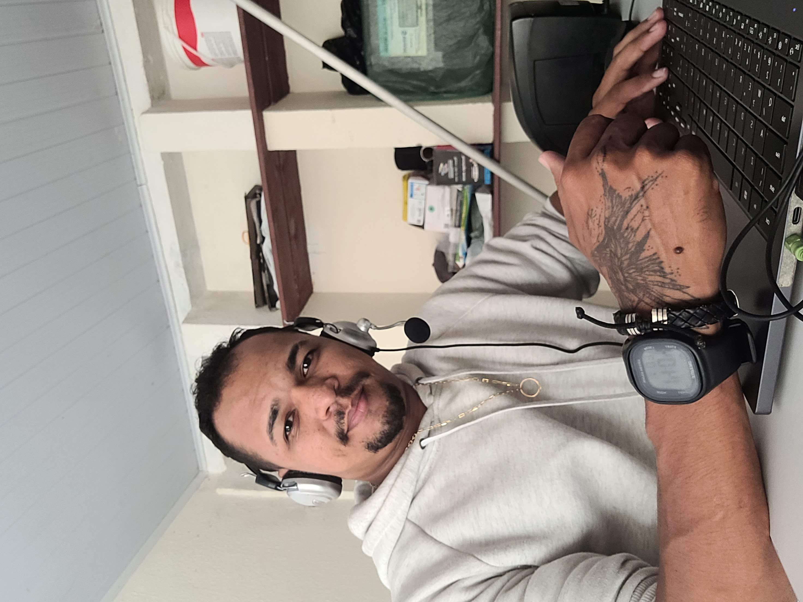

Objetivo do site
O objetivo deste site é apresentar um desafio da Incode Tech School, com a finalidade de avaliar o nível de conhecimento adquirido sobre os temas abordados em aula. Além do conteúdo discutido em sala, busquei aprofundar meus estudos em HTML e CSS através de outras plataformas, como o site www.w3schools. Acredito que não devemos nos limitar apenas ao que é ensinado em aula, pois o campo é vasto e há sempre mais a aprender.

Sobre Mim

Informação Pessoal
- Nome: Tharcio Silva
- Profissão: Analista de Superte Tecnico Nivel 2
- Empresa: Solução Inforout
Habilidades
- Linguagem SQL (Básico): Criação de consultas, manipulação de dados, e otimização de queries.
- PHP (Intermediário): Desenvolvimento de aplicações web dinâmicas.
- JavaScript (Intermediário): Manipulação do DOM, integração de bibliotecas e frameworks como jQuery.
- Python (Intermediário): Desenvolvimento de scripts para automação e análise de dados.